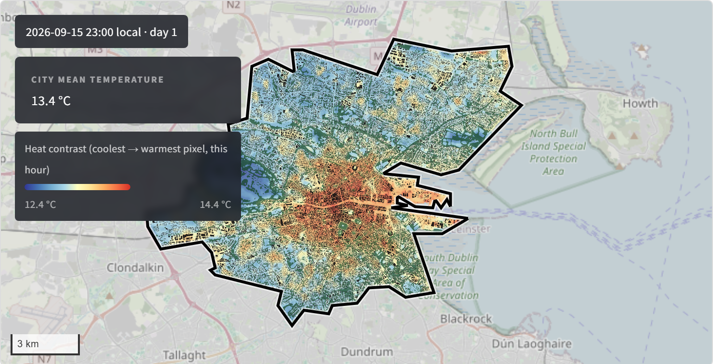

Urban Heat Forecast
Picture: downscaled ~50 m air-temperature forecast for a city (here Ghent), scrubable through the coming days.
Urban Heat Forecast turns the weather forecast into a street-scale picture of the coming heat. We downscale numerical weather forecasts to a 50–100 m grid across the whole city, using land cover, built form, water and greenery to show where the urban heat island will be strongest — hour by hour, up to 72 hours ahead.
Municipalities, utilities and public-health teams can use it to time cooling centres, target warnings at the hottest neighbourhoods and prepare the grid before a heatwave arrives. The live dashboard can be extended with historical and future (heatwave) UHI maps for planning and adaptation studies.
Strengths & innovation
- AccuracyValidated against station observations across the domain.
- Long runsRuns over long continuous periods, not just single snapshots.
- High resolution50–100 m grid across the whole city footprint.
- Spatial factorsLarge set of spatial drivers: land cover, built form, water, greenery.
“A forecast a day and a half ahead is enough time to open a cooling centre, warn vulnerable residents and brace the grid — before the heat arrives.”
Demo
Archived forecast A real ~50 m hourly air-temperature forecast for Dublin, issued on 15 September 2026 — a past run kept here for demonstration, not a live forecast. Scrub through the 72 hours on a real basemap, with building and tree-canopy context layers, and toggle between absolute temperature and the urban-heat-island contrast against the rural baseline. Values are shown only inside the modelled area.
Loading demo data…
Request a study
Urban Heat Forecast is set up per city, so each project starts with a short scoping conversation. Tell us which city or area you need and how you would use the forecast — we come back with a proposal.
- ScopeShare your city or area of interest, and whether you need live, historical or future (heatwave) maps.
- Set upWe build the 50–100 m model for your domain and validate it against local station observations.
- OperateYou get the dashboard with hourly forecasts up to 72 hours ahead, plus data access for your own tools.